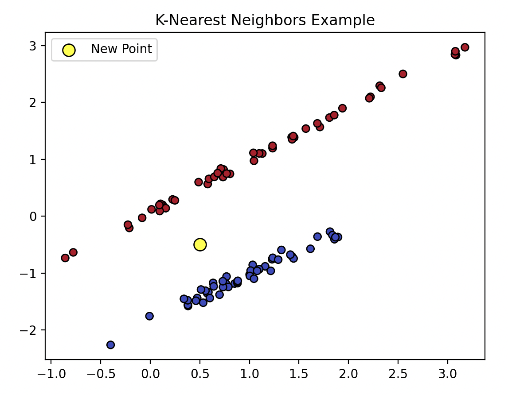

K-Nearest Neighbors (KNN) is a simple (simple relative to others) machine learning algorithm used for classification or regression. It works by finding the 𝑘 closest data points (neighbors) to a query point and making predictions based on the majority label (for classification) or the average value (for regression) of those neighbors. For example, imagine you have points representing apples and oranges on a graph, and you want to classify a new point. By checking the closest neighbors, if most are labeled as "apple," the new point is classified as an apple.
Here is an example in Python that performs KNN.
import numpy as np
import matplotlib.pyplot as plt
from sklearn.datasets import make_classification
from sklearn.neighbors import KNeighborsClassifier
# Generate sample data with two informative features
X, y = make_classification(
n_samples=100,
n_features=2,
n_informative=2,
n_redundant=0,
n_clusters_per_class=1,
random_state=42
)
new_point = np.array([[0.5, -0.5]])
# Fit KNN
knn = KNeighborsClassifier(n_neighbors=5)
knn.fit(X, y)
# Predict the class of the new point
predicted_class = knn.predict(new_point)
# Plot data
plt.scatter(X[:, 0], X[:, 1], c=y, cmap='coolwarm', edgecolors='k')
plt.scatter(new_point[0, 0], new_point[0, 1], c='yellow', edgecolors='k', s=100, label='New Point')
plt.title('K-Nearest Neighbors Example')
plt.legend()
plt.show()
This is what the output of that would be:
You are able to see that there are two distinct already created data groups. We want to figure out where this point belongs. We are going to compare the distances of the point to the known datapoints to see which group it should belong to.
The steps are as followed:
As one final technical example, imagine you have a new point and the value of 𝑘 is 5. You will look at the neighbooring points and extract the 5 highest points. You will look at how many points there are and what group/label/classification they belong to, and whichever is the majorty type is the type that is applied to the new datapoint.
d(p, q)Euclidean Distance - measures the straight-line distance between two points in space = √Square root of the sum of squared differences ∑i=1nSum over all features (n-dimensional space) (pi - qi)2Square of the difference between the i-th feature of points p and q
The formula computes the distance between two points p (the new point) and q (an existing data point) in an n-dimensional space.
class(new_point)Class assigned to the new point = argmaxFinds the label with the highest count ∑i=1kSum over the k-nearest neighbors I(labeli = labelj)Indicator function: 1 if labels match, 0 otherwise
This formula assigns a class to the new point by finding the most frequent label among the k-nearest neighbors, using the indicator function I to count matching labels.
As a final examlpe, here is a gif that does a really good job of summarizing this entire process.
That is it for k nearest neighboors, a useful classification algorithm for machine learning!
If there are any edits that you would like to request to be added to this, please submit them in an issue in the GitHub or you can send an email to sysadmin@silverflag.net
{kind=link}